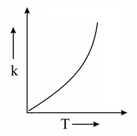
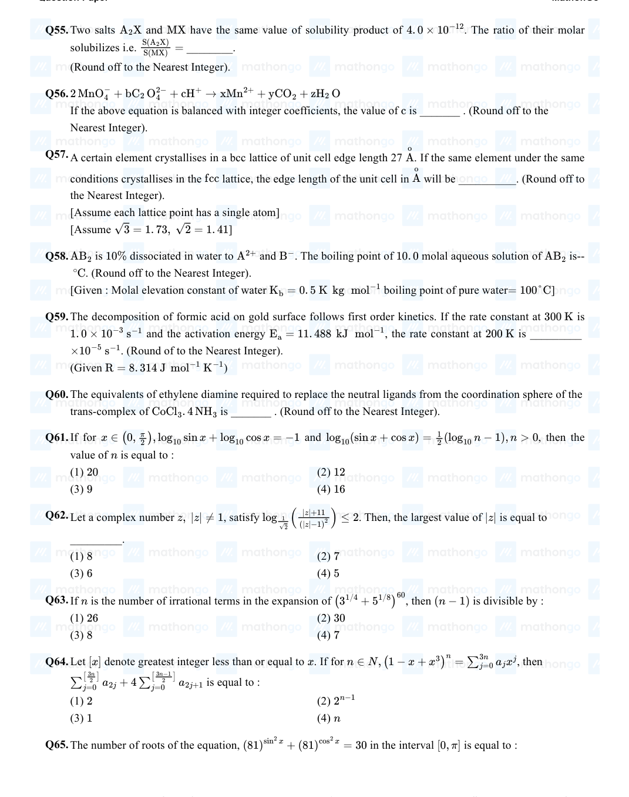
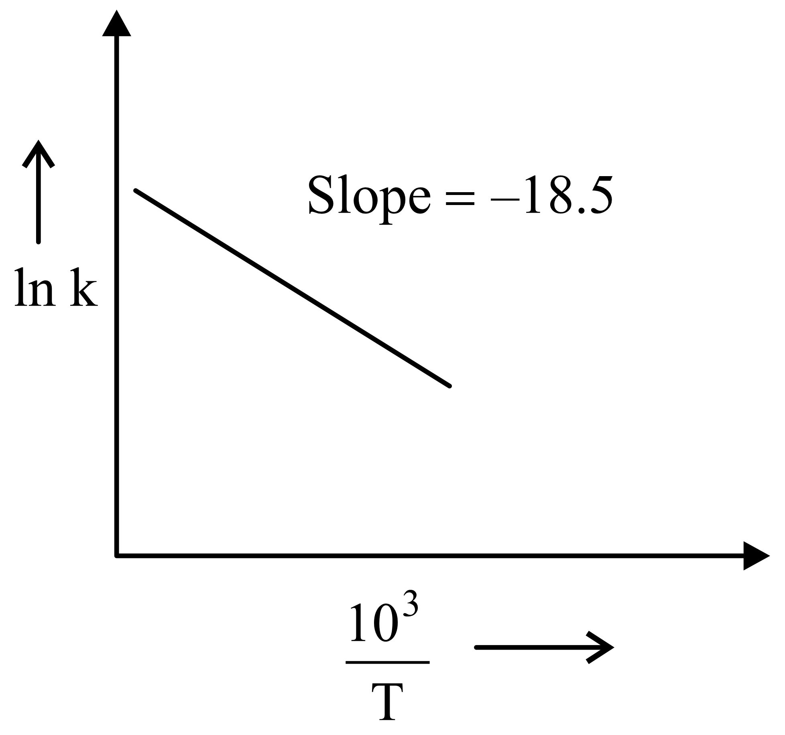
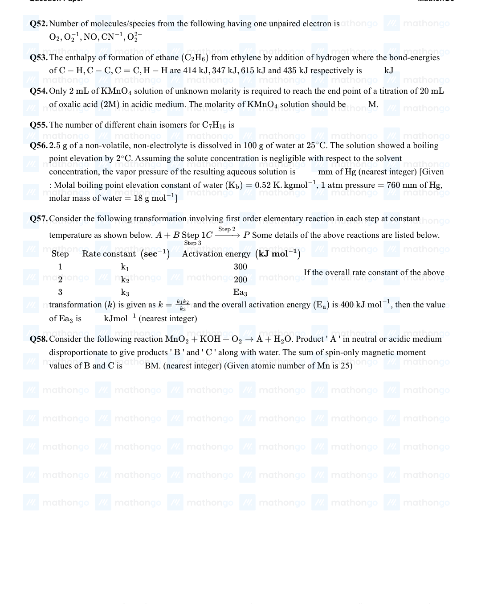
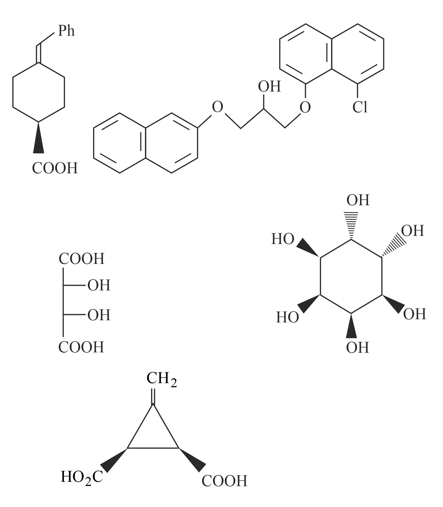

Filter questions
📌 CHEM-CHEMKINE-RATE_LAW_ORDER
↗ Cluster set
Q1
CHEM-2021-0101-S2-Q038
2021 | 01 Sep | Shift 2
—
MCQ
Which one of the following given graphs represents the variation of rate constant ( k ) with temperature ( T ) for an endothermic reaction?

Answer: D
Q2
CHEM-2021-0101-S1-Q059
2021 | 16 Mar | Shift 1
—
Integer
The decomposition of formic acid on gold surface follows first order kinetics. If the rate constant at 300 K is 1. 0 × 10−3 s−1 and the activation energy Ea = 11. 488 kJ mol−1 , the rate constant at 200 K is _________ ×10−5 s−1 . (Round of to the Nearest Integer). mol−1 K−1 (Given R = 8. 314 J )

Answer: 10
Q3
CHEM-2021-0101-S2-Q059
2021 | 16 Mar | Shift 2
—
Integer
A and B decompose via first order kinetics with half-lives 54. 0 min and 18. 0 min respectively. Starting from an equimolar non-reactive mixture of and , the time taken for the concentration of to become times A B A 16 that of B is ______ min . (Round off to the Nearest Integer). (H2O)6]3+
Answer: 108
Q4
CHEM-2021-0101-S1-Q059
2021 | 17 Mar | Shift 1
—
Integer
For a certain first order reaction 32% of the reactant is left after 570 s. The rate constant of this reaction is ×10−3 s−1. (Round off to the Nearest Integer). [Given: log10 2 = 0. 301, ln 10 = 2. 303 ]
Answer: 2
Q5
CHEM-2021-0101-S1-Q057
2021 | 20 Jul | Shift 1
—
Integer
The inactivation rate of a viral preparation is proportional to the amount of virus. In the first minute after preparation, 10% of the virus is inactivated. The rate constant for viral inactivation is ___ × 10−3 min−1. (Nearest integer) [Use : ln 10 = 2. 303; log10 3 = 0. 477 property of logarithm : log xy = y log x]

Answer: 106
Q6
CHEM-2021-0101-S2-Q058
2021 | 20 Jul | Shift 2
—
Integer
PCl5(g) →PCl3(g) + Cl2(g) L−1 In the above first order reaction the concentration of PCl5 reduces from initial concentration 50 mol to 10 mol L−1 in 120 minutes at 300 K. The rate constant for the reaction at 300 K is x × 10−2 min−1. The value of x is __________. [Given ] log 5 = 0. 6989
Answer: 1
Q7
CHEM-2021-0101-S1-Q059
2021 | 22 Jul | Shift 1
—
Integer
N2O5( g) →2 NO2( g) + 1 2 O2( g) In the above first order reaction the initial concentration of N2O5 is 2. 40 × 10−2 mol L−1 at 318 K. The concentration of N2O5 after 1 hour was 1. 60×10−2 mol L−1. The rate constant of the reaction at 318 K is ×10−3 min−1 (Nearest integer): [ Given : log 3 = 0. 477, log 5 = 0. 699]
Answer: 7
Q8
CHEM-2021-0101-S1-Q060
2021 | 24 Feb | Shift 1
—
Integer
Gaseous cyclobutene isomerizes to butadiene in a first order process which has a 'K' value of 3 . 3 × s-1 at 153°C . The time in minutes it takes for the isomerization to proceed 40% to completion at this temperature is_____. (Rounded off to the nearest integer)

Answer: 26
Q9
CHEM-2021-0101-S2-Q058
2021 | 24 Feb | Shift 2
—
Integer
Sucrose hydrolyses in acid solution into glucose and fructose following first order rate law with a half-life of 3. 33 h at 25°C. After 9 h, the fraction of sucrose remaining is f. The value of log10( 1 ) is ________ ×10−2. (Rounded off to the nearest integer) f [Assume: In 10 = 2. 303, ln 2 = 0. 693 ]

Answer: 81
Q10
CHEM-2021-0101-S1-Q059
2021 | 25 Feb | Shift 1
—
Integer
For the reaction, aA + bB →cC + dD, the plot of log k v/s 1 is given below: T The temperature at which the rate constant of the reaction is 10−4 s−1 is _____ K. (Rounded-off to the nearest integer) [Given : The rat5e constant of the reaction is 10−5 s−1 at 500 K .]
Answer: 526
Q11
CHEM-2021-0101-S2-Q058
2021 | 25 Feb | Shift 2
—
Integer
The rate constant of a reaction increases by five times on increase in temperature from to . The 27°C 52°C value of activation energy in kJmol−1 is ___ .(Rounded-off to the nearest integer) [R = 8. 314 J K−1 mol−1]
Answer: 52
Q12
CHEM-2021-0101-S1-Q038
2021 | 25 Jul | Shift 1
—
MCQ
For the following graphs, Choose from the options given below, the correct one regarding order of reaction is :
Answer: B
Q13
CHEM-2021-0101-S2-Q034
2021 | 26 Aug | Shift 2
—
MCQ
Given below are two statements : one is labelled as Assertion
Answer: B
Q14
CHEM-2021-0101-S2-Q059
2021 | 27 Aug | Shift 2
—
Integer
The first order rate constant for the decomposition of CaCO3 at 700 K is 6. 36 × 10−3 s−1 and activation energy is 209 kJ mol−1 . Its rate constant (in s−1) at 600 K is x × 10−6 . The value of x is (Nearest integer) [Given R = 8. 31 J K−1 mol−1; log 6. 36 × 10−3 = −2. 19, 10−4.79 = 1. 62 × 10−5]
Answer: 16
Q15
CHEM-2021-0101-S1-Q041
2021 | 27 Jul | Shift 1
—
MCQ
For a reaction of order n, the unit of the rate constant is :
Answer: C
Q16
CHEM-2021-0101-S2-Q058
2021 | 31 Aug | Shift 2
—
Integer
For the reaction A →B, the rate constant k (in s-1) is given by 103 log10k = 20 . 35 - 2 . 47 × T The energy of activation in kJ mol-1 is ________ . (Nearest integer) [Given : R = 8 . 314 J K-1 mol-1]
Answer: 47
Q17
CHEM-2022-0101-S1-Q058
2022 | 24 Jun | Shift 1
—
Integer
The rate constants for decomposition of acetaldehyde have been measured over the temperature range 700 −1000 K . The data has been analysed by plotting lnk vs 103 graph. The value of activation energy for the T reaction is kJmol−1 . (Nearest integer) (Given : R = 8. 31 JK−1 mol−1 )

Answer: 154
Q18
CHEM-2022-0101-S1-Q059
2022 | 25 Jun | Shift 1
—
Integer
For a given chemical reaction γ1A + γ2B →γ3C + γ4D. Concentration of C changes from 10 mmol dm-3 to dm-3 20 mmol in 10 s . Rate of appearance of D is 1 . 5 times the rate of disappearance of B which is twice the rate of disappearance A. The rate of appearance of D has been experimentally determined to be 9 mmol dm-3s-1 . Therefore the rate of reaction is____mmol dm-3s-1 . (Nearest Integer)
Answer: 1
Q19
CHEM-2022-0101-S2-Q059
2022 | 26 Jun | Shift 2
—
Integer
Catalyst A reduces the activation energy for a reaction by 10 kJ mol−1 at 300 K . The ratio of rate constants, kT, Catalysed is ex . The value of x is____[nearest integer] [Assume that the pre-exponential factor is same in kT, Uncatalysed both the cases. Given R = 8. 31 J K−1 mol−1 ]
Answer: 4
Q20
CHEM-2022-0101-S1-Q058
2022 | 27 Jun | Shift 1
—
Integer
The rate constant for a first order reaction is given by the following equation : lnk = 33. 24 −2.0×104 T K The Activation energy for the reaction is given by kJmol−1 . (In Nearest integer) (Given : R = 8. 3 J K−1 mol−1 )
Answer: 166
Q21
CHEM-2022-0101-S2-Q059
2022 | 27 Jun | Shift 2
—
Integer
It has been found that for a chemical reaction with rise in temperature by 9 K the rate constant gets doubled. Assuming a reaction to be occurring at 300 K , the value of activation energy is found to be kJmol−1 . [nearest integer] (Given ln 10 = 2. 3, R = 8. 3 J K−1 mol−1, log 2 = 0. 30 )
Answer: 59
Q22
CHEM-2022-0101-S1-Q059
2022 | 28 Jun | Shift 1
—
Integer
For a first order reaction A →B , the rate constant, k = 5. 5 × 10−14 s−1 . The time required for 67% completion of reaction is x × 10−1 times the half life of reaction. The value of x is Nearest integer) (Given : ) log 3 = 0. 4771
Answer: 16
Q23
CHEM-2022-0101-S1-Q057
2022 | 29 Jun | Shift 1
—
Integer
The activation energy of one of the reactions in a biochemical process is 532611 J mol−1 . When the temperature falls from 310 K to 300 K , the change in rate constant observed is k300 = x × 10−3k310° . The value of x is [Given: ln 10 = 2. 3 R = 8. 3 J K−1 mol−1 ]
Answer: 1
Q24
CHEM-2023-0101-S1-Q046
2023 | 08 Apr | Shift 1
—
MCQ
The number of given statement/s which is/are correct is_____
Answer: B
Q25
CHEM-2023-0101-S2-Q059
2023 | 10 Apr | Shift 2
—
Integer
The number of incorrect statement/s from the following is ______________ A. The successive half lives of zero order reactions decreases with time. B. A substance appearing as reactant in the chemical equation may not affect the rate of reaction C. Order and molecularity of a chemical reaction can be a fractional number D. The rate constant units of zero and second order reaction are molL -1 s-1 and mol-1 L s-1 respectively
Answer: 1
Q26
CHEM-2023-0101-S1-Q058
2023 | 24 Jan | Shift 1
—
Integer
The number of correct statement/s from the following is _____ . A.Larger the activation energy, smaller is the value of the rate constant. B. The higher is the activation energy, higher is the value of the temperature coefficient. C. At lower temperatures, increase in temperature causes more change in the value of than at higher k temperature. 1 -Ea D. A plot of ln k vs is a straight line with slope equal to T R
Answer: 3
Q27
CHEM-2023-0101-S2-Q046
2023 | 25 Jan | Shift 2
—
MCQ
A first order reaction has the rate constant, k = 4. 6 × 10−3 s−1 . The number of correct statement/s from the following is/are Given: . log 3 = 0. 48 A. Reaction completes in 1000 s . B. The reaction has a half-life of 500 s . C. The time required for 10% completion is 25 times the time required for 90% completion. D. The degree of dissociation is equal to (1 −e−kt) . E. The rate and the rate constant have the same unit.
Answer: B
Q28
CHEM-2023-0101-S1-Q049
2023 | 29 Jan | Shift 1
—
MCQ
For certain chemical reaction X →Y , the rate of formation of product is plotted against the time as shown in the figure. The number of Correct statement/s from the following is _____
Answer: A
Q29
CHEM-2023-0101-S2-Q037
2023 | 29 Jan | Shift 2
—
MCQ
An indicator ‘ X ’ is used for studying the effect of variation in concentration of iodide on the rate of reaction of iodide ion with H2O2 at room temp. The indicator ‘ X ’ forms blue colored complex with compound ‘ A ’ present in the solution. The indicator ‘ X ’ and compound ‘ A ’ respectively are
Answer: A
Q30
CHEM-2023-0101-S2-Q046
2023 | 29 Jan | Shift 2
—
MCQ
For conversion of compound , the rate constant of the reaction was found to be A →B 4. 6 × 10−5 Lmol −1 s−1 . The order of the reaction is _____ .
Answer: B
Q31
CHEM-2023-0101-S1-Q058
2023 | 30 Jan | Shift 1
—
Integer
If compound reacts with following first order kinetics with rate constant 10-3 s-1. The time A B 2 . 011 × taken by A (in seconds) to reduce from 7 g to 2 g will be _____ . (Nearest Integer) log5 = 0 . 698, log7 = 0 . 845, log2 = 0 . 301
Answer: 623
Q32
CHEM-2023-0101-S2-Q048
2023 | 30 Jan | Shift 2
—
Integer
An organic compound undergoes first order decomposition. If the time taken for the 60% decomposition is 540 s , then the time required for 90% decomposition will be is _____ s. (Nearest integer). Given : ln 10 = 2. 3; log 2 = 0. 3 x
Answer: 3
Q33
CHEM-2023-0101-S1-Q058
2023 | 31 Jan | Shift 1
—
Integer
A →B The rate constants of the above reaction at 200 K and 300 K are 0 . 03 min-1 and 0 . 05 min-1 respectively. The activation energy for the reaction is J (Nearest integer) (Given : In 10 = 2 . 3 R = 8 . 3 J K-1 mol-1 log 5 = 0 . 70 log 3 = 0 . 48 log2 = 0 . 30
Answer: 2520
Q34
CHEM-2023-0101-S2-Q049
2023 | 31 Jan | Shift 2
—
Integer
The rate constant for a first order reaction is 20 min−1 . The time required for the initial concentration of the reactant to reduce to its 1 level is ______ × 10−2 min . (Nearest integer) 32
Answer: 1
Q35
CHEM-2024-0101-S2-Q058
2024 | 01 Feb | Shift 2
—
Integer
The following data were obtained during the first order thermal decomposition of a gas A at constant volume: Ag →2 Bg + Cg S. No Time/s Total pressure/(atm) 1 . 0 0 . 1 2 . 115 0 . 28 The rate constant of the reaction is _______ × 10-2s-1 (nearest integer)

Answer: 2
Q36
CHEM-2024-0101-S1-Q057
2024 | 04 Apr | Shift 1
—
Integer
Consider the following transformation involving first order elementary reaction in each step at constant − temperature as shown below. A + B Step 1 C Step → 2 P Some details of the above reactions are listed below. Step 3 (sec−1) (kJ mol−1) Step Rate constant Activation energy 1 k1 300 If the overall rate constant of the above 2 k2 200 3 k3 Ea3 transformation (k) is given as k = k1k2 and the overall activation energy (Ea) is 400 kJ mol−1 , then the value kJmol−1 k3 of Ea3 is (nearest integer)

Answer: 100
Q37
CHEM-2024-0101-S2-Q056
2024 | 04 Apr | Shift 2
—
Integer
Consider the following reaction, the rate expression of which is given below A + B →C rate = k[A]1/2[ B]1/2 The reaction is initiated by taking 1M concentration of A and B each. If the rate constant (k) is 4.6 × 10−2 s−1 , then the time taken for A to become 0.1M is ______ sec. (nearest integer)
Answer: 50
Q38
CHEM-2024-0101-S2-Q057
2024 | 09 Apr | Shift 2
—
Integer
Consider the following first order gas phase reaction at constant temperature A(g) →2 B( g) + C(g) If the total pressure of the gases is found to be 200 torr after 23sec . and 300 torr upon the complete decomposition of A after a very long time, then the rate constant of the given reaction is ______ ×10−2 s−1 (nearest integer) [Given : log10(2) = 0.301 ]
Answer: 3
Q39
CHEM-2024-0101-S1-Q059
2024 | 29 Jan | Shift 1
—
Integer
For a reaction taking place in three steps at same temperature, overall rate constant K1K2 . If and K = K3 Ea1, Ea2 Ea3 are 40, 50 and 60 kJ / mol respectively, the overall Ea is _________ kJ / mol .
Answer: 30
Q40
CHEM-2024-0101-S2-Q059
2024 | 29 Jan | Shift 2
—
Integer
The half-life of radioisotopic bromine - 82 is 36 hours. The fraction which remains after one day is _________ ×10−2 . (Given antilog 0. 2006 = 1. 587) Round off to the nearest integer
Answer: 63
Q41
CHEM-2024-0101-S1-Q043
2024 | 31 Jan | Shift 1
—
MCQ
Integrated rate law equation for a first order gas phase reaction is given by (where 𝑃𝑖 is initial pressure and 𝑃𝑡 is total pressure at time 𝑡)
Answer: A
Q42
CHEM-2025-0101-S1-Q040
2025 | 23 Jan | Shift 1
—
MCQ
A radioactive nucleus n2 has 3 times the decay constant as compared to the decay constant of another radioactive nucleus n1 . If initial number of both nuclei are the same, what is the ratio of number of nuclei of n2 to the number of nuclei of n1 , after one half-life of n1 ?
Answer: D
Q43
CHEM-2025-0101-S2-Q052
2025 | 29 Jan | Shift 2
—
Integer
Drug X becomes ineffective after 50% decomposition. The original concentration of drug in a bottle was 16mg/mL which becomes 4mg/mL in 12 months. The expiry time of the drug in months is __________ Assume that the decomposition of the drug follows first order kinetics. (1) 2 (2) 6 (3) 12 (4) 3
Answer: 2
📌 CHEM-CHEMKINE-INTEGRATED_RATE_EQUATIONS
↗ Cluster set
Q44
CHEM-2021-0101-S2-Q059
2021 | 27 Jul | Shift 2
—
Integer
For the first order reaction A →2 B, 1 mole of reactant A gives 0. 2 moles of B after 100 minutes. The half life of the reaction is ...... min. (Round off to the nearest integer). [Use : ln 2 = 0. 69, ln 10 = 2. 3 Properties of logarithms : ln xy = y ln x ln( x ) = ln x −ln y] y (Round off to the nearest integer)
Answer: 655
Q45
CHEM-2021-0101-S1-Q057
2021 | 31 Aug | Shift 1
—
Integer
For a first order reaction, the ratio of the time for 75% completion of a reaction to the time for 50% completion is ___________ . (Integer answer)
Answer: 2
Q46
CHEM-2022-0101-S2-Q042
2022 | 24 Jun | Shift 2
—
MCQ
For a first order reaction, the time required for completion of 90% reaction is ' x ' times the half life of the reaction. The value of ' x ' is (Given: ln 10 = 2. 303 and log 2 = 0. 3010 )
Answer: C
Q47
CHEM-2023-0101-S1-Q059
2023 | 10 Apr | Shift 1
—
Integer
A molecule undergoes two independent first order reactions whose respective half lives are 12 min and min. If both the reactions are occurring then the time taken for the consumption of the reactant is 3 50% ______ min. (Nearest integer)

Answer: 2
Q48
CHEM-2023-0101-S1-Q048
2023 | 13 Apr | Shift 1
—
Integer
is the time required for the reaction to undergo completion and is the time required for the t87.5 87. 5% t50 reaction to undergo 50% completion. The relation between t87.5 and t50 for a first order reaction is t87.5 = x × t50 The value of x is _________. (Nearest integer)
Answer: 1
Q49
CHEM-2023-0101-S2-Q060
2023 | 13 Apr | Shift 2
—
Integer
A ( g ) →2 B ( g ) + C ( g ) is a first order reaction. The initial pressure of the system was found to be 800 mm Hg which increased to 1600 mm Hg after 10 min. The total pressure of the system after 30 min will be mm Hg. (Nearest integer)
Answer: 2200
Q50
CHEM-2023-0101-S1-Q045
2023 | 25 Jan | Shift 1
—
Integer
For the first order reaction A →B the half life is 30 min . The time taken for 75% completion of the reaction is mm. (Nearest integer) Given : log 2 = 0. 3010 log 3 = 0. 4771 log 5 = 0. 6989
Answer: 1
Q51
CHEM-2024-0101-S1-Q056
2024 | 06 Apr | Shift 1
—
Integer
Time required for 99.9% completion of a first order reaction is _______ times the time required for completion of 90% reaction.(nearest integer)
Answer: 3
Q52
CHEM-2024-0101-S2-Q055
2024 | 06 Apr | Shift 2
—
Integer
Consider the two different first order reactions given below A + B →C (Reaction 1 ) P →Q (Reaction 2) The ratio of the half life of Reaction 1 : Reaction 2 is . If and represent the time taken to complete 5 : 2 t1 t2 2/3rd and 45th of Reaction 1 and Reaction 2, respectively, then the value of the ratio t1 : t2 is ______ ×10−1 (nearest integer). [Given : log10(3) = 0.477 and log10(5) = 0.699 ]
Answer: 17
Q53
CHEM-2024-0101-S2-Q059
2024 | 27 Jan | Shift 2
—
Integer
Time required for completion of 99 . 9% of first order reaction is ________ times of half life (t1 ) of the / 2 reaction
Answer: 10
Q54
CHEM-2024-0101-S1-Q059
2024 | 30 Jan | Shift 1
—
Integer
The rate of first order reaction is 0. 04 mol L−1 s−1 at 10 minutes and 0. 03 mol L−1 s−1 at 20 minutes after initiation. Half life of the reaction is ______ minutes. (Given log 2 = 0. 3010, log 3 = 0. 4771) Round off your answer to the nearest integer.
Answer: 24
📌 CHEM-CHEMKINE-ARRHENIUS_ACTIVATION_ENERGY
↗ Cluster set
Q55
CHEM-2021-0101-S2-Q050
2021 | 20 Jul | Shift 2
—
MCQ
Which one of the following statements is not true about enzymes?
Answer: A
Q56
CHEM-2021-0101-S1-Q058
2021 | 26 Feb | Shift 1
—
Integer
An exothermic reaction has an activation energy mol−1 . If energy change during the X →Y 30 kJ ΔE reaction is −20 kJ , then the activation energy for the reverse reaction in kJ is (Integer answer)
Answer: 50
Q57
CHEM-2021-0101-S2-Q059
2021 | 26 Feb | Shift 2
—
Integer
If the activation energy of a reaction is 80. 9 kJ mol−1 , the fraction of molecules at 700 K , having enough energy to react to form products is e−x . The value of x is (Rounded off to the nearest integer) [Use mol−1 R = 8. 31 J K−1 ]
Answer: 14
Q58
CHEM-2022-0101-S2-Q057
2022 | 29 Jun | Shift 2
—
Integer
The equation k = (6. 5 × s−1)e−26000 K/T is followed for the decomposition of compound A . The activation energy for the reaction is ____ KJ mol−1 . [nearest integer] (Given: R = 8. 314 J K−1 mol−1 )
Answer: 216
Q59
CHEM-2023-0101-S1-Q058
2023 | 06 Apr | Shift 1
—
Integer
For the adsorption of hydrogen on platinum, the activation energy is 30 kJ mol – 1 and for the adsorption of hydrogen on nickel, the activation energy is 41 . 4 kJ mol – 1 . The logarithm of the ratio of the rates of chemisorption on equal areas of the metals at 300 K is _______ (Nearest integer) Given: In10 = 2 . 3 R = 8 . 3 J K-1 mol-1
Answer: 2
Q60
CHEM-2023-0101-S1-Q056
2023 | 15 Apr | Shift 1
—
Integer
For a reversible reaction A ⇌B , the ΔH forward reaction = 20 kJ mol–1 . The activation energy of the uncatalyzed forward reaction is 300 kJ mol–1 . When the reaction is catalysed keeping the reactant concentration same, the rate of the catalysed forward reaction at 27∘C is found to be same as that of the uncatalyzed reaction at 327∘C . The activation energy of the catalysed backward reaction is _______ kJ mol–1 .
Answer: 130
Q61
CHEM-2023-0101-S2-Q048
2023 | 24 Jan | Shift 2
—
Integer
The number of statement/s which are the characteristics of physisorption is ___________. A. It is highly specific in nature B. Enthalpy of adsorption is high C. It decreases with increase in temperature D. It results into unimolecular layer E. No activation energy is needed
Answer: 3
Q62
CHEM-2025-0101-S2-Q055
2025 | 22 Jan | Shift 2
—
Integer
Consider the given figure and choose the correct option : (1) Activation energy of both forward and backward (2) Activation energy of forward reaction is E1 + E2 reaction is E1 + E2 and reactant is more stable and product is less stable than reactant. than product. (3) Activation energy of backward reaction is E1 and (4) Activation energy of forward reaction is E1 + E2 product is more stable than reactant. and product is more stable than reactant.
Answer: 2